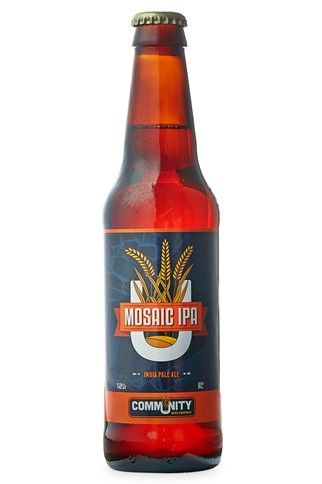
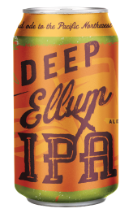
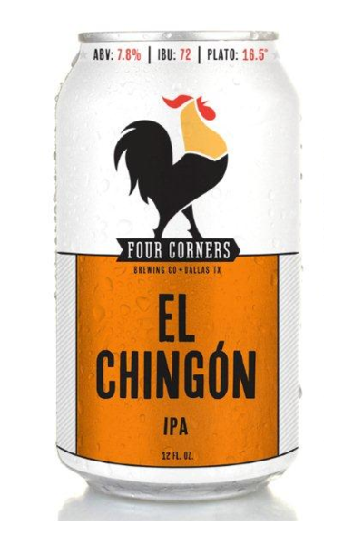
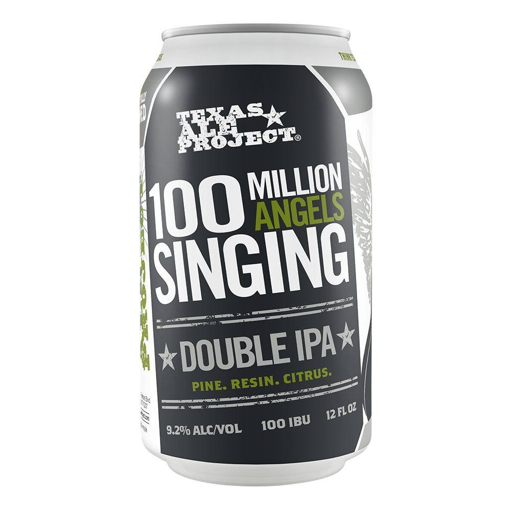
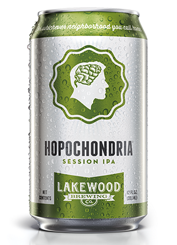
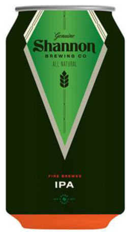
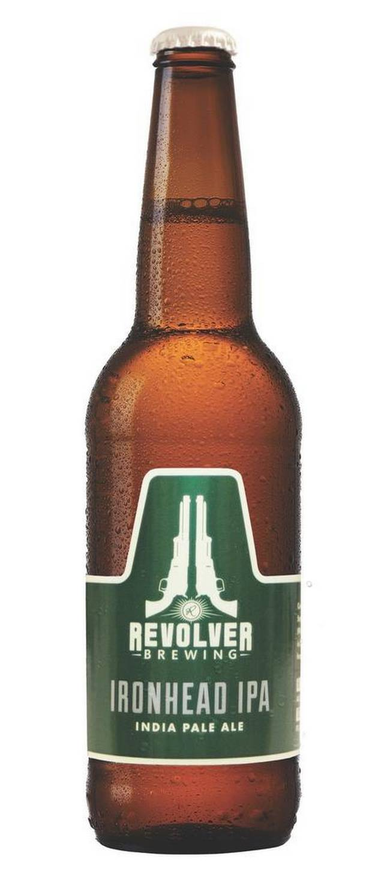
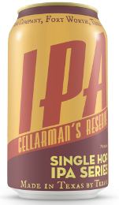
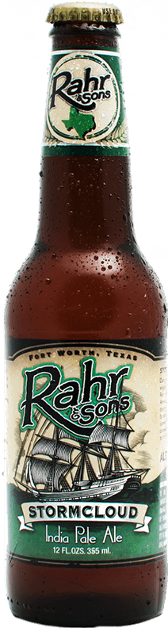

Community
Mosaic IPA

Mosaic is not designed to blow your head off with overpowering hop bitterness. Instead, it is an extremely well-balanced brew that showcases its unique hop aroma and flavor. This beer gets its name from a new hop variety named “Mosaic,” which is predominantly where the immense, raw hop aroma and flavor is derived.
Deep Ellum Brewing
Deep Ellum IPA

We like hops, but we like American hops most of all. Here we use some of our absolute favorites. However, they might not be used like you may expect, by using varieties with high alpha acid contents (which means more potential for bitterness) and using them in ways that emphasize the flavor and aroma we can render a rather bitter ale with over the top tropical fruit, citrus, pine, floral and more hop derived aroma and flavor.
Four Corners Brewing
El Chignon

We used several varieties of bold American hops balanced with Munich malt. After brewing, we dry hop the beer for intense fresh hop aroma.
Texas Ale Project
100 Million Angels Singing

Harmonious within the realm of extremism. This Double IPA is double dry-hopped with copious amounts of some of our favorite American-grown hops. Pine, resin, and citrus.
Lakewood Brewing
Hopochondria

So, you like hops. You really like hops. You dream about hops. You obsess about hops. You want to marry hops. Sounds like a classic case of Hopochondria, which is probably why you're attracted to this beer. Our session IPA is perfect for those who really dig the complexities of an IPA and want something more accessible. With five unique hop varieties, it boasts citrus, floral, and grassy notes. So go ahead and pop the top. Rest assured, it isn't all in your head.
Shannon Brewing
Shannon IPA

Shannon IPA is a beautiful blend of Ireland and the Pacific Northwest. Our IPA recipe starts out as an English-style IPA giving it a malt forward profile that intentionally avoids the aggressive bitterness of most American IPAs. We then dry-hop our IPA to give it the extra hop aroma that is lacking in most English-style IPAs…yes, it is a Goldilocks beer…it’s just right!
Revolver Brewing
Ironhead IPA

Persistently drinkable, this citrus-forward IPA is brewed with Apollo, Citra, Centennial, and Saphir hops. The Beer is pale, with enough malt body to support the hop and malt sweetness to bring a pleasant herbal finish.
Martin House Brewing
Cellarman's Reserve

In order to highlight the hops, the base of this beer is a simple recipe comprised only of 2-row and Munich malts and only one single hop varietal for bittering, flavor, and dry-hopping additions. While its availability is year-round, the hops we use will not be. From time to time, whenever our Cellarmen feel like it, we’ll switch out that single hop. While the beer overall will remain the same, the drinker will get to experience the nuances of each hop varietal.
Rahr & Sons Brewing
Stormcloud IPA

During a fierce storm on his voyage across the ocean, William Rahr could be heard yelling from the tall masted ship: "Roll on old sea! And when you are done, when the storm clouds have destroyed themselves, we will still be standing and drinking!" Today, we have created the ultimate ale for a voyage such as this: A German-Style IPA - a traditional India Pale Ale with German Influence. It has a more balanced malt to hop flavor than most American IPAs.